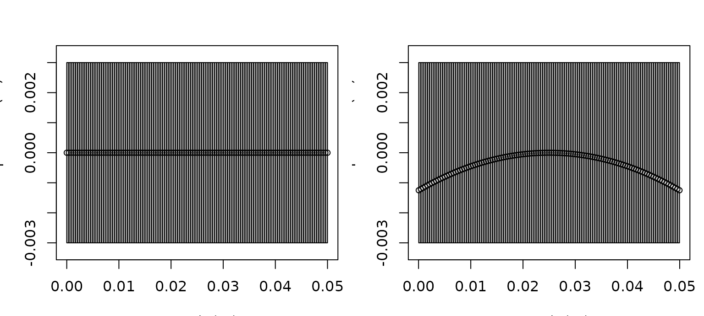

Shape Manipulation
Source:vignettes/shape-manipulation-reforging/shape-manipulation-reforging.Rmd
shape-manipulation-reforging.RmdOverview
Geometry can be repositioned, bent, resized, or resampled without rebuilding a target from its original inputs. These operations are useful for cleaning measured profiles and for controlled studies of posture, size, component placement, and numerical resolution.
Manipulation changes the object returned by the package. It can also change the scientific meaning of that object. Keep the original object, give each modified variant a distinct name, and record what the transformation represents.
Choose the operation
| Function | Use |
|---|---|
brake() |
Bend a centerline using relative or measured curvature. |
reforge() |
Resize components, set target dimensions, or change segment counts. |
translate_shape() |
Apply coordinate offsets. |
reanchor_shape() |
Place the nose, center, or tail at a requested coordinate. |
offset_component() |
Move one component within a composite scatterer. |
inflate_shape() |
Widen or narrow a selected axial region. |
smooth_shape() |
Smooth a stored profile. |
resample_shape() |
Change axial discretization. |
flip_shape() |
Reverse the axial profile. |
Use brake() for posture or curvature. Use
reforge() for size, proportions, or resolution. The smaller
helpers handle positioning and profile preparation.
Bending with brake()
brake() applies a smooth curvature to a body component
or supported scatterer. In mode = "ratio",
radius_curvature is relative to body length. In
mode = "measurement", it is a physical radius in the
geometry’s length units. Ratio mode supports size-normalized
comparisons. Measurement mode is appropriate when curvature has been
measured directly.
library(acousticTS)
straight_obj <- fls_generate(
shape = cylinder(
length_body = 0.05,
radius_body = 0.003,
n_segments = 120
),
density_body = 1045,
sound_speed_body = 1520
)
bent_ratio <- brake(
straight_obj,
radius_curvature = 5,
mode = "ratio"
)
bent_measured <- brake(
straight_obj,
radius_curvature = 0.35,
mode = "measurement"
)
old_par <- par(no.readonly = TRUE)
par(mfrow = c(1, 2), mar = c(3.2, 3.2, 2.6, 0.8))
plot(straight_obj, type = "shape", main = "Original FLS cylinder")
plot(bent_ratio, type = "shape", main = "After brake()")
A fluid-like cylinder before and after ratio-based bending.
par(old_par)Curvature changes the projected length, local orientation, and phase relationships along the body. Check the modified centerline and segment resolution, not only the outline.
For a bent FLS, stored body length is the centerline arc
length rather than the projected x span. If
reforge() is applied afterward, a requested length rescales
that bent centerline. To resize a straight target and bend it afterward,
apply the functions in that order explicitly.
The distinction can be checked directly:
bent_rescaled <- reforge(
bent_ratio,
body_target = c(length = 0.08)
)
bent_rpos <- extract(bent_rescaled, "body")$rpos
centerline_length <- sum(sqrt(
diff(bent_rpos["x", ])^2 + diff(bent_rpos["z", ])^2
))
c(
stored_length = extract(
bent_rescaled,
c("shape_parameters", "length")
),
centerline_length = centerline_length,
projected_x_span = diff(range(bent_rpos["x", ]))
)## stored_length centerline_length projected_x_span
## 0.08000000 0.08000000 0.07986674Resizing with reforge()
reforge() is an S4 generic with methods for
FLS, GAS, SBF, and
BBF objects. Its arguments depend on the class, but two
forms recur:
-
*_scalemultiplies current dimensions. -
*_targetrequests final dimensions.
Use named dimensions such as length, width,
height, and radius. Set the corresponding
isometric_* argument to FALSE when the
dimensions should vary independently. Segment-count arguments change
numerical resolution without requiring a separate reconstruction.
data(krill, package = "acousticTS")
krill_40mm <- reforge(
krill,
body_target = c(length = 0.04)
)
krill_fine <- reforge(
krill,
n_segments_body = 200
)
data.frame(
object = c("original", "40 mm", "200 segments"),
length_m = c(
extract(krill, c("shape_parameters", "length")),
extract(krill_40mm, c("shape_parameters", "length")),
extract(krill_fine, c("shape_parameters", "length"))
),
n_segments = c(
extract(krill, c("shape_parameters", "n_segments")),
extract(krill_40mm, c("shape_parameters", "n_segments")),
extract(krill_fine, c("shape_parameters", "n_segments"))
)
)## object length_m n_segments
## 1 original 0.0410898 14
## 2 40 mm 0.0400000 14
## 3 200 segments 0.0410898 200Composite scatterers
For SBF and BBF objects, body and internal
components can be changed separately. The following example lengthens
the body, reduces swimbladder height, and resamples both components:
data(sardine, package = "acousticTS")
sardine_modified <- reforge(
sardine,
body_scale = c(length = 1.2),
swimbladder_scale = c(height = 0.8),
isometric_body = FALSE,
isometric_swimbladder = FALSE,
maintain_ratio = FALSE,
n_segments_body = 60,
n_segments_swimbladder = 40,
containment = "warn"
)Height changes are applied about each component’s own vertical
center. For upper/lower envelope profiles, this is the implied local
midline. For explicit centerlines, such as an FLS body or
BBF backbone, the path remains fixed while the surrounding
thickness changes.
After changing an internal component, verify that it remains inside
the body. The containment argument can warn, stop with an
error, or skip this check. Use offset_component()
when a bladder or backbone needs a controlled positional adjustment.
Canonical gas-filled bodies
For canonical GAS bodies, reforge()
regenerates the geometry with the matching shape constructor instead of
scaling the stored coordinates directly. This preserves a clean
discretization and an accurate shape label.
gas_sphere <- gas_generate(
shape = sphere(radius_body = 0.01, n_segments = 40),
g_fluid = 0.0012,
h_fluid = 0.22
)
gas_isometric <- reforge(
gas_sphere,
body_target = c(radius = 0.015)
)
gas_elongated <- reforge(
gas_sphere,
body_target = c(length = 0.05),
isometric_body = FALSE
)
c(
original = extract(gas_sphere, c("shape_parameters", "shape")),
isometric = extract(gas_isometric, c("shape_parameters", "shape")),
elongated = extract(gas_elongated, c("shape_parameters", "shape"))
)## original isometric elongated
## "Sphere" "Sphere" "ProlateSpheroid"A sphere remains spherical only when length and radius retain the
spherical relationship. An independent length change promotes it to a
prolate spheroid. Arbitrary GAS bodies have no canonical
constructor to regenerate them, so they are scaled directly by axis.
Positioning and profile preparation
The smaller manipulation helpers can be combined for measured profiles:
centered_obj <- reanchor_shape(
straight_obj,
anchor = "center",
at = 0
)
prepared_obj <- straight_obj |>
inflate_shape(x_range = c(0.015, 0.035), scale = 1.35) |>
smooth_shape(span = 7) |>
resample_shape(n_segments = 120)
reversed_obj <- flip_shape(prepared_obj, axis = "x")Profile-changing operations can convert canonical geometry into an arbitrary representation. Recheck the stored shape label and model compatibility after local edits. Translation and reanchoring change position but not dimensions.
Checks after manipulation
Before running another model:
- plot the original and modified objects together
- inspect component lengths, radii, and relative positions
- confirm the stored shape class or label
- check segment convergence after resampling
- verify containment for composite targets
- record whether the change represents biology, posture, or numerical cleanup
- rerun the model rather than reusing results stored before the transformation
Continue with Building Shapes, Building Scatterers, or Comparing Models.